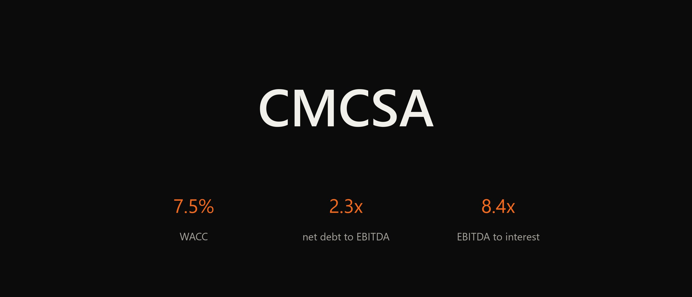

Comcast DCF model.

Comcast is the one company the model cannot reconcile with its price. At $22 the market is pricing Comcast as a business in permanent decline, and the filings do not support that view.
The question, the method, the finding, and what it means
- The question
- Why does the market price Comcast at 4.5 times EBITDA, and do the filings support a business that shrinks forever?
- Data and method
- 2026 annualized from nine months, with Versant out and Sky Deutschland out from the second quarter. Two revenue lines, a 7.5 percent WACC with half the capital in debt, and a bear case run harder than usual.
- What I found
- The model gives $44.48 a share on the perpetuity method and $34.81 on the exit multiple, against a $22.04 price. The price implies cash flow falling 5.3 percent a year forever and a 3.6 times exit multiple.
- What it means
- Half of Comcast's capital is debt at 4.5 percent after tax, so each point of WACC is worth $8 to $15 a share. Three agencies have it on negative watch for the spin, and that is the gap between my cost of debt and the market's.
A media company that is breaking itself up
Comcast resembles what Skydance might look like after a decade, with cable, a studio, parks, a streaming service that has just turned profitable and 2.3 times leverage. It spun off its cable networks in January 2026 and will spin NBCUniversal and Sky in mid 2027, so it is becoming a broadband utility.
I value it as it is today, before the spin, on nine months of 2026 actuals. That is the only basis the filings support.
The numbers
The base case on the perpetuity method, at a 7.5 percent WACC and 0.5 percent long term growth. This is more than twice the $22.04 price.
The base case on the exit multiple method, at 5.5 times 2031 EBITDA. The market pays 4.5 times today and paid 6 to 7 for most of the last decade.
The perpetual decline in cash flow that the price implies. The bear case, with connectivity falling 3 percent a year and margins down to 25 percent, still lands at $23 to $27.
The exit multiple the price implies, which is below where any large cable company has traded outside a crisis.
The WACC. Half of Comcast's capital is debt at about 4.5 percent after tax, which is why the discount rate is the lowest of the five and the value is the most sensitive to it.
The share of value that falls after 2031.
These are model outputs under stated assumptions. Nothing on this page is a recommendation to buy or sell anything.
Inputs that differ from the template
- Base year. 2026 as now reported, without Versant and from the second quarter without Sky Deutschland. Nine months of $90.7 billion of revenue and $25.9 billion of adjusted EBITDA, annualized to $120.5 billion and $35 billion.
- Revenue. Two lines. Connectivity and Platforms, $79 billion, falls 1 percent a year then flattens as price offsets broadband losses. Content and Experiences, $41.5 billion net of eliminations, grows 2 percent.
- EBITDA. Margin 29 percent drifting down to 28. Separation costs of $500 million in 2026, $800 million in 2027 and $300 million in 2028, which are my estimates.
- Cash flow. Capex 9.5 percent of revenue. Depreciation of $16 billion a year shelters a lot of the profit from cash tax, which is a real reason cable cash flow is high relative to EBITDA.
- Discount rate. Unlevered beta 0.7, 1.0 debt to equity, levered beta 1.24, cost of equity 10.6 percent, cost of debt 5.9 percent. Market weights give 7.5 percent.
- Equity bridge. $87.4 billion of debt, $7.6 billion of cash, 3,551 million shares from the October 15 cover.
Two pictures

Base case EBITDA, free cash flow and revenueFlat revenue, flat EBITDA, and unlevered free cash flow of about $17 billion a year. The market enterprise value is about nine years of that. 
Where the answers landEvery range starts above the price. That is unusual, and I treat it as the finding itself and not as a reason to place more trust in the model.
I believed the first answer
The first build gave $60 a share. For a $78 billion company, a result that far from the price is a signal to recheck the model before drawing any conclusion. I raised the beta, cut growth to 0.5 percent, cut the exit multiple to 5.5, put the cost of debt at 95 bp over Treasuries and ran the bear case harder. The model still lands at $35 to $44. The page therefore does not claim that Comcast is cheap. It sets out what the price assumes, which is a decline of 5 percent a year in perpetuity, and leaves the reader to judge whether broadband and parks are likely to decline at that rate.
In order of how much they move it
- The discount rate. Each point of WACC is worth $8 to $15 a share on the perpetuity method. If the spin leaves the broadband company with a higher cost of debt, the value would change quickly.
- Broadband losses. Comcast is losing subscribers to fixed wireless and fiber. The bear case runs connectivity down 3 percent a year. The price implies a steeper decline.
- The spin itself. A sum of the parts after mid 2027 is a different model with two balance sheets, and the S-4 or Form 10 is the document to build it from.
- Theme parks. Segment EBITDA fell 17 percent in the third quarter of 2026 on a tough Epic Universe comparison. I grow the segment 2 percent, which may be generous.
The model
Download the Excel model · Back to the five
Blue cells are inputs. Pick a scenario in Inputs cell C5. The 2026 base year is annualized from nine months and labelled as such. Nothing in the model comes from a Bloomberg Terminal or from any employer.